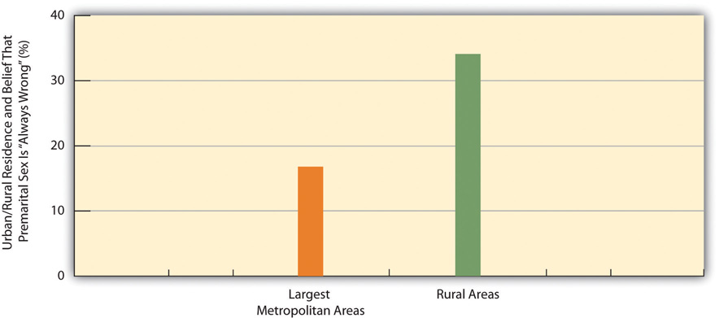

Once again the three major sociological perspectives offer important but varying insights to help us understand urbanization. Table 14.1 "Theory Snapshot" summarizes their assumptions.
Table 14.1 Theory Snapshot
| Theoretical perspective | Major assumptions |
|---|---|
| Functionalism | Cities serve many important functions for society but also have their dysfunctions. Functionalist theorists differ on the relative merits and disadvantages of urban life, and in particular on the degree to which a sense of community and social bonding exists within cities. |
| Conflict theory | Cities are run by political and economic elites that use their resources to enrich their positions and to take resources from the poor and people of color. The diversity of social backgrounds found in cities contributes to conflict over norms and values. |
| Symbolic interactionism | City residents differ in their types of interaction and perceptions of urban life. Cities are not chaotic places but rather locations in which strong norms and values exist. |
A basic debate within the functionalist perspective centers on the relative merits of cities and urbanization: In what ways and to what extent are cities useful (functional) for society, and in what ways and to what extent are cities disadvantageous and even harmful (dysfunctional) for society? Put more simply, are cities good or bad?
In essence, there is no one answer to this question, because cities are too complex for a simple answer. Cities are both good and bad. They are sites of creativity, high culture, population diversity, and excitement, but they are also sites of crime, impersonality, and other problems.
Since sociologists began studying urbanization in the early years of the discipline, an important question has been the degree to which cities are impersonal and alienating for their residents. In 1887, German sociologist Ferdinand Tönnies (1887/1963)Tönnies, F. (1963). Community and society. New York, NY: Harper and Row. (Original work published 1887) raised this question when he wrote about the changes that occurred as societies changed from small, rural, and traditional cultures to larger, urban, and industrial settings. He said that a sense of community, or GemeinschaftAccording to Ferdinand Tönnies, traditional societies in which family, kin, and community ties are quite strong, with people caring for each other and looking out for one another., characterizes traditional societies. In these societies, family, kin, and community ties are quite strong, with people caring for each other and looking out for one another. As societies grew and industrialized and as people moved to cities, he wrote, social ties weakened and became more impersonal. Tönnies called this type of society a GesellschaftAccording to Ferdinand Tönnies, the weakening of social ties and personal relationships as societies grow and become industrialized., and he was quite critical of this development. He lamented the loss in urban societies of close social bonds and of a strong sense of community, and he feared that a sense of rootlessness in these societies begins to replace the feeling of stability and steadiness characteristic of small, rural societies.
One of the key founders of sociology, French scholar Émile Durkheim, was more positive than Tönnies about the nature of cities and urbanized societies. He certainly appreciated the social bonds and community feeling, which he called mechanical solidarityAccording to Émile Durkheim, the social bonds and community feeling characteristic of small, rural societies., characteristic of small, rural societies. However, he also thought that these societies stifled individual freedom and that social ties still exist in larger, urban societies. He called these latter ties organic solidarityAccording to Émile Durkheim, the social ties that still exist in larger, urban societies, which stem from the division of labor., which he said stems from the division of labor. When there is a division of labor, he wrote, everyone has to depend on everyone else to perform their jobs. This interdependence of roles creases a solidarity that retains much of the bonding and sense of community found in small, rural societies (Durkheim, 1893/1933).Durkheim, É. (1933). The division of labor in society. London, United Kingdom: Free Press. (Original work published 1893)
Contemporary research tends to emphasize that strong social bonds do exist in cities (Guest, Cover, Matsueda, & Kubrin, 2006).Guest, A. M., Cover, J. K., Matsueda, R. L., & Kubrin, C. E. (2006). Neighborhood context and neighboring ties. City & Community, 5(4), 363–385. Although cities can be anonymous (think of the mass of people walking by each other on a busy street in the downtown area of a large city), many city residents live in neighborhoods where people do know each other, associate with each other, and look out for each other. In these neighborhoods, a sense of community and strong social bonds do, in fact, exist.
In many urban neighborhoods, people are friendly with each other and feel a strong sense of community.
Image courtesy of Hynek Moravec, http://commons.wikimedia.org/wiki/File:Delhi_Old_Delhi_Ulice2001.JPG,
In 1938, University of Chicago sociologist Louis Wirth wrote a very influential essay, “Urbanism as a Way of Life,” in which he took both a positive and a negative view of cities (Wirth, 1938).Wirth, L. (1938). Urbanism as a way of life. American Journal of Sociology, 44, 3–24. He agreed with Tönnies that cities have a weaker sense of community and weaker social bonds than do rural areas. But he also agreed with Durkheim that cities generate more creativity and greater tolerance for new ways of thinking. In particular, he said that urban residents are more tolerant than rural residents of nontraditional attitudes, behaviors, and lifestyles, in part because they are much more exposed than rural residents to these nontraditional ways. Supporting Wirth’s hypothesis, contemporary research finds that urban residents indeed hold more tolerant views on several kinds of issues (Moore & Ovadia, 2006).Moore, L. M., & Ovadia, S. (2006). Accounting for spatial variation in tolerance: The effects of education and religion. Social Forces, 84(4), 2205–2222.
An example of the greater tolerance of urban residents (and thus the lower tolerance of rural residents) appears in Figure 14.5 "Urban/Rural Residence and Belief That Premarital Sex Is “Always Wrong” (%)", which depicts the percentage of Americans in the nation’s twelve largest metropolitan areas and in its rural areas who say that premarital sex is “always wrong.” Rural residents are twice as likely as urban residents to feel this way.
Figure 14.5 Urban/Rural Residence and Belief That Premarital Sex Is “Always Wrong” (%)
Source: Data from General Social Survey. (2010). Retrieved from http://sda.berkeley.edu/cgi-bin/hsda?harcsda+gss10.
We just saw that functionalism has mixed views about the benefits and disadvantages of cities and urban life and thus of urbanization. In contrast to this ambivalence, conflict theory’s views are uniformly critical. In this regard, recall from Chapter 1 "Understanding Social Problems" that conflict theory assumes a basic conflict between society’s “haves” and “have-nots,” or between the economic and political elites and the poor and people of color. This type of conflict, says conflict theory, manifests itself especially in the nation’s cities, in which the “haves” and “have-nots” live very different lives. On the one hand, the rich in American cities live in luxurious apartments and work in high-rise corporate buildings, and they dine at the finest restaurants and shop at the most expensive stores. On the other hand, the poor and people of color live in dilapidated housing and can often barely make ends meet.
Beyond this basic disparity of city life, conflict theorists add that the diverse backgrounds and interests of city residents often lead to conflict because some residents’ beliefs and practices clash with those of other residents. In one of the earliest statements of this position, sociologist Thorsten Sellin (1938),Sellin, T. (1938). Culture conflict and crime (No. Bulletin 41): New York, NY: Social Science Research Council. who was writing during an era of mass immigration into American cities of people from other nations, said that crime is the result of “culture conflict.” In particular, he wrote that crime by immigrants often results from the clash of their traditional ways of thinking and acting with the norms of American society. As one example, he wrote that a father in New Jersey who had emigrated from Sicily killed a teenage boy who had slept with his daughter. The father was surprised when he was arrested by local police, because in the traditional Sicilian culture a man was permitted and even expected to defend his family’s honor by acting as the father did!
More recent applications of conflict theory to urbanization emphasize the importance of political economyThe interaction of political and economic institutions and processes., or the interaction of political and economic institutions and processes. In this way of thinking, political and economic elites in a city (bankers, real estate investors, politicians, and others) collaborate to advance their respective interests. Thus urban development often takes the form of displacing poor urban residents from their homes so that condominiums, high-rise banks and other corporate buildings, posh shopping malls, or other buildings favoring the rich can be built. More generally, these elites treat cities as settings for the growth of their wealth and power, rather than as settings where real people live, go to school, work at a job, and have friends and acquaintances. Sociologists John Logan and Harvey Molotch use the term growth machine ideology to characterize the view of the city that guides these elites’ policies and practices (Logan & Molotch, 2007).Logan, J. R., & Molotch, H. L. (2007). Urban fortunes: The political economy of place (2nd ed.). Berkeley, CA: University of California Press.
Consistent with the overall approach of symbolic interactionism, scholars of the city who take this approach focus on the nature of urban residents’ interaction with each other, the reasons for their patterns of interaction, and their perceptions of various aspects of urban life. Their work has yielded many rich, vivid descriptions of the urban life. Many and probably most of these accounts have concerned the lives of the poor and of people of color. The late Elliott Liebow wrote two of the most famous accounts. The first of these two was his majestic Tally’s Corner (Liebow, 1967), which depicted the lives of African American men who “hung around” a particular street corner in a large city. His second account was Tell Them Who I Am: The Lives of Homeless Women (Liebow, 1993),Liebow, E. (1993). Tell them who I am: The lives of homeless women. New York, NY: Free Press. which, as its title implies, depicted the lives of urban homeless women. Yet another classic account is William Foote Whyte’s (1943)Whyte, W. F. (1943). Street corner society: The social structure of an Italian slum. Chicago, IL: University of Chicago Press. Street Corner Society, which examined leadership in a street gang in Chicago, Illinois.
These and other accounts all depict cities as places where various norms and values prevail, in contrast to views of cities that depict them as wild, chaotic places. Building on these more positive accounts, recent work by sociologist Elijah Anderson emphasizes that most poor urban residents are “decent” (as they call themselves), law-abiding people who strongly disapprove of the crime and drug use in their neighborhoods (Anderson, 2000).Anderson, E. (2000). Code of the street: Decency, violence, and the moral life of the inner city. New York, NY: W. W. Norton. He also emphasizes that cities are filled with parks and other public settings in which people from different racial and socioeconomic backgrounds gather every day and interact in various ways that help foster interracial understanding. Anderson calls these settings “cosmopolitan canopies,” and says they “offer a respite from the lingering tensions of urban life and an opportunity for diverse peoples to come together…Through personal observation, they may come casually to appreciate one another’s differences and empathize with the other in a spirit of humanity” (Anderson, 2011, pp. xiv–xv).Anderson, E. (2011). The cosmopolitan canopy: Race and civility in everyday life. New York, NY: W. W. Norton. In this manner, writes Anderson, people from different races can at least partly overcome the racial tensions that afflict many American cities.
Other work in the symbolic interactionist tradition seeks to understand the different lifestyles of city residents. Sociologist Herbert Gans (1982)Gans, H. J. (1982). The urban villagers: Group and class in the life of Italian-Americans (Updated and expanded ed.). New York, NY: Free Press. authored a classic typology of urban residents based on their differing lifestyles and experiences. Gans identified five types of city residents.
The first type is cosmopolites. These are people who live in a city because of its cultural attractions, restaurants, and other features of the best that a city has to offer. Cosmopolites include students, writers, musicians, and intellectuals. Unmarried and childless individuals and couples are the second type; they live in a city to be near their jobs and to enjoy the various kinds of entertainment found in most cities. If and when they marry or have children, respectively, many migrate to the suburbs to raise their families. The third type is ethnic villagers, who are recent immigrants and members of various ethnic groups who live among each other in certain neighborhoods. These neighborhoods tend to have strong social bonds and more generally a strong sense of community. Gans wrote that all these three types generally find the city inviting rather than alienating and have positive experiences far more often than negative ones.
In contrast, two final types of residents find the city alienating and experience a low quality of life. The first of these two types, and the fourth overall, is the deprived. These are people with low levels of formal education who live in poverty or near poverty and are unemployed, are underemployed, or work at low wages. They live in neighborhoods filled with trash, broken windows, and other signs of disorder. They commit high rates of crime and also have high rates of victimization by crime. The final type is the trapped. These are residents who, as their name implies, might wish to leave their neighborhoods but are unable to do so for several reasons: they may be alcoholics or drug addicts, they may be elderly and disabled, or they may be jobless and cannot afford to move to a better area.
In thinking about this typology, it is important to keep in mind that city residents’ social backgrounds—their social class, race/ethnicity, gender, age, and sexual orientation—all influence the kind of lifestyle they tend to adopt and thus the type of resident they are according to the typology. As earlier chapters documented, these dimensions of our social backgrounds often yield many kinds of social inequalities, and the quality of life that city residents enjoy depends heavily on these dimensions. For example, residents who are white and wealthy have the money and access to enjoy the best that cities have to offer, while those who are poor and of color typically experience the worst aspects of city life. Because of fear of rape and sexual assault, women often feel more constrained than men from traveling freely throughout a city and being out late at night; older people also often feel more constrained because of physical limitations and fear of muggings; and gays and lesbians are still subject to physical assaults stemming from homophobia. The type of resident we are, then, in terms of our sociodemographic profile affects what we experience in the city and whether that experience is positive or negative.